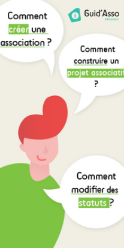
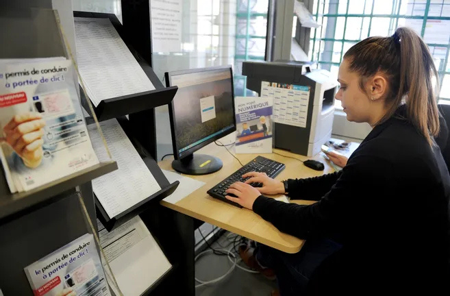

Vivre ensemble

Guid'asso
Dispositif de l'Etat, géré par la Ligue de l'enseignement pour le département du Loiret, qui propose un accompagnement des associations tout au long de leur existence : de leur création à leur dissolution. Présence d'une informatrice au sein de Bee'Mobile qui pourra répondre aux questions des associations ou au besoin les rediriger vers des accompagnateurs généralistes, aptes à répondre à toutes les questions. Propositions de temps de rencontre et de formations gratuites tout au long de l'année.
Local permanent : 1 rue de Bicètre, Bonny-sur-Loire
Espace Initiatives Habitants
Service ouvert à l'ensemble des habitants pour proposer et mettre en œuvre des projets collectifs :
Projet en cours de développement : un jardin partagé à Bonny-sur-Loire, rue de Bicètre.
Projet à venir : projet artistique "Rêver plus grand !". Projet intergénérationnel encadré par trois artistes : une comédienne, une écrivaine et une danseuse.
Local permanent : 1 rue de Bicètre, Bonny-sur-Loire

Permanence numérique
Service en cours de développement qui vise à proposer aux habitants et aux associations de l'ensemble de la Communauté de communes un accompagnement sur toutes les thématiques relatives au numérique (aide à l'utilisation d'un ordinateur, bonne utilisation des réseaux sociaux, formations à l'utilisation d'outils, accompagnement pour les démarches administratives, ...). Ce service sera en itinérance sur l'ensemble des communes du Berry Loire Puisaye.
Local permanent : 1 rue de Bicètre, Bonny-sur-Loire